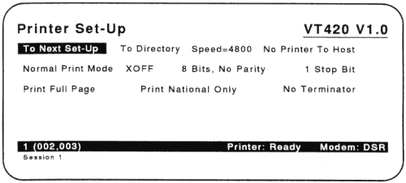

| Chapter 7 | Contents | Chapter 9 |
You can connect a printer directly to your VT420. This chapter describes the Printer Set-Up screen and the types of printer you can use. The chapter also describes how to use a modem with the terminal.
The VT420 has a built-in serial printer interface that supports many draft, letter-quality, and laser printers, as well as plotters. Here are some of the Digital printers and plotters you can use with your terminal:
| LA Series | Letter-Quality | Laser | Plotter | |
|---|---|---|---|---|
| LA12 | LA38 | LQP02 | LN01 | LJ250 |
| LA34 | LA50 | LQP03 | LN03 | LJ251 |
| LA35 | LA75 | |||
| LA36 | LA100/LA210 | |||
The VT420 uses the Comm2 port to connect a printer.
Make sure the installation is correct. Check the appropriate cabling section in Chapter 2.
One session (one cable) and a printer
Two sessions with SSU software (one cable) and a printer.
NOTE: You cannot connect a printer to the Comm2 port if the VT420 is set up for two sessions using two cables.
The VT420 lets you select from three different print modes, using the print mode feature in the Printer Set-Up screen (Chapter 5):
The status line (Chapter 4) displays the current print mode setting.
This mode lets you print displayed text by using the F2 (Print) key. Page refers to the current page in the terminal's page memory. This page may be larger than the screen. The size of the page depends on two other set-up features.
| Feature | Set-Up Screen | Function |
|---|---|---|
| Page arrangement | Display Set-Up | Selects the page size. By default the page size is 24 lines, which matches the default screen size. |
| Printer extent | Printer Set-Up | Lets you print a page or the scrolling region. The scrolling region is the area within the scrolling margins. |
In this mode, the VT420 sends the current display line to the printer when the cursor moves to the next line after a line feed, form feed, vertical tab, or autowrap. Auto print mode lets you print each line as it is received from the host.
While selected, Auto Print Mode appears on the status line. You can still perform printing functions with the F2 (Print) key in auto print mode.
You can also turn auto print mode on and off by pressing Ctrl F2 (Print). When you leave auto print mode, you return to normal print mode.
In this mode, the host system can send text directly to the printer, without displaying the text on the terminal's screen.
While selected, Printer: Controller appears on the status line.
You cannot use the F2 (Print) key in printer controller mode.
This mode lets you send information directly from the keyboard to the printer, without displaying the information on the screen. You may find this feature useful in setting up certain printers for operation, without involving the host system. To select local controller mode, you must set two different set-up features (Chapter 5).
The VT420 lets you assign a printer exclusively to one session or share the printer with both sessions. To assign the printer, you use the printer assignment feature in the Global Set-Up screen. There are three possible settings:
NOTE: The printer assignment feature is not enabled if the printer port is assigned as a normal communication port for one of the sessions (in the Global Set-Up screen).
This screen lets you select features to match those of your printer. Table 8-1 describes the features on the Printer Set-Up screen.
Notes About Printing
NOTE: The Printer Set-Up screen only appears if the terminal comm ports feature on the Global Set-Up screen is set to Sessions on Comm1 or S1=Comm1.
|  |
| Feature and Settings | Description |
|---|---|
| Default settings are in bold type. | |
Transmit speed/ receive speed
|
Selects the baud rate the VT420 uses to send data to a printer. The baud rates range from 300 to 38,400 bits per second. |
| Printer to host comm | Selects whether or not the printer can send data to the host system. |
|
Data can only move from host to printer. |
|
Data can move from host to printer and from printer to host. |
| Print mode | Determines when and how printing takes place. |
|
Lets you start print functions from the keyboard. |
|
Prints the current line of text when the VT420 receives a line feed, form feed, or vertical tab from the host. |
|
Lets the host send data directly to the printer without displaying the data on the screen. |
XOFF
|
Selects whether or not to use XON/XOFF flow control with the printer. |
NOTE: XON/XOFF flow control operates independently between the terminal and printer, and between the terminal and host. |
|
Data bits/parity
|
Selects a character format to match the printer's. You can select 7 bits (no, even, oldd, mark, or space parity) or 8 bits (no, even, or odd parity). |
Stop bits
|
Selects the number of stop bits (one or two) used by the printer port UART. |
Print Extent
|
Selects how much of the screen to print when you press the F2 (Print) key. |
| Printed data type | Lets you restrict the character sets used for printing, so they match the capabilities of the attached printer. |
|
Use with a printer that supports the ASCII set (in 8-bit multinational mode) or the current national set (in 7-bit national mode). Examples: LA34, LA36, and LA120 printers. |
|
Use with a printer that supports the VT100 line drawing set and (1) the ASCII set (in 8-bit multinational mode), or (2) the current national set (in 7-bit national mode). Example: LA50. |
Print Terminator
|
Selects whether or not the VT420 sends a form feed (FF) at the end of a print operation. |
You need a modem if you want to connect your VT420 to a computer system through a telephone line. The modem converts the serial characters sent between the terminal and computer into signals that can travel over telephone lines.
The VT420 can operate with full-duplex, asynchronous modems that meet the following national and international standards. The modem you use with your VT420 must be compatible with the modem used by the host system:
You can use Digital's DF124, DF212, DF224, and DF242 modems with the VT420. You can also use compatible modems and acoustic couplers, such as the AT&T's 103, 113, and 212 types. See Appendix B for information on ordering modems.
To connect one of these standard modems to the VT420:
Set the modem control feature to the appropriate setting:
| Modem Control | If you plan to use modem features that require additional signals beyond data leads only. Examples: call origination and dialling from the keyboard, automatic speed select, and disconnect on loss of carrier or when Shift F5 (Break) is pressed. |
| Data Leads Only | If you do not plan to use modem control features or your modem (or modem cable) is not configured for modem control. |